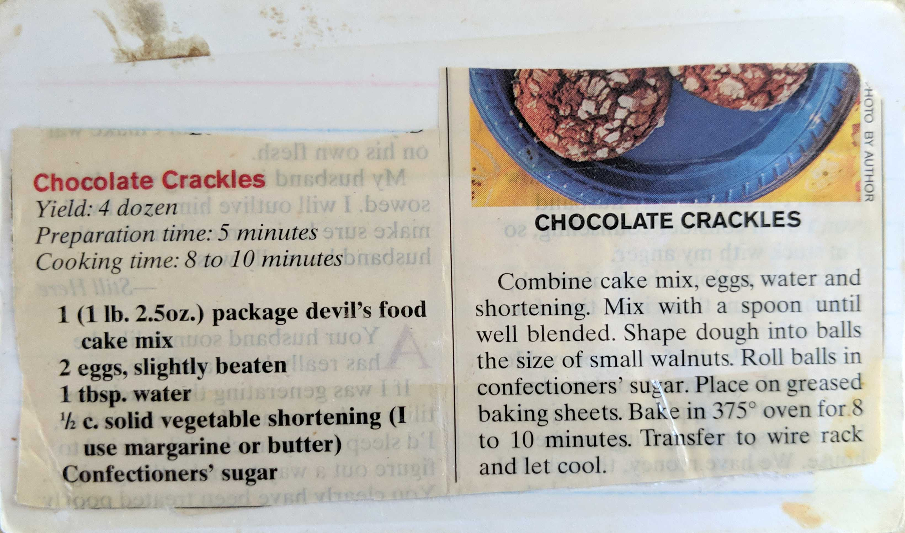

Chocolate Crackles
Yield: 4 dozen
Preparation time: 5 minutes
Cooking time: 8-10 minutes
1 (1lb. 2.5oz.) package devil's food cake mix
2 eggs, slightly beaten
1 tbsp. water
1/2 c. solid vegetable shortening (I use margarine or butter)
Confectionser's sugar
Combine cake mix, eggs, water and shortening. Mix with a spoon until well blended. Shape dough into balls
the size of walnuts. Roll balls in confectioners' sugar. Place on greased baking sheets. Bake in 375°
oven for 8 to 10 minutes. Transfer to wire rack and let cool.